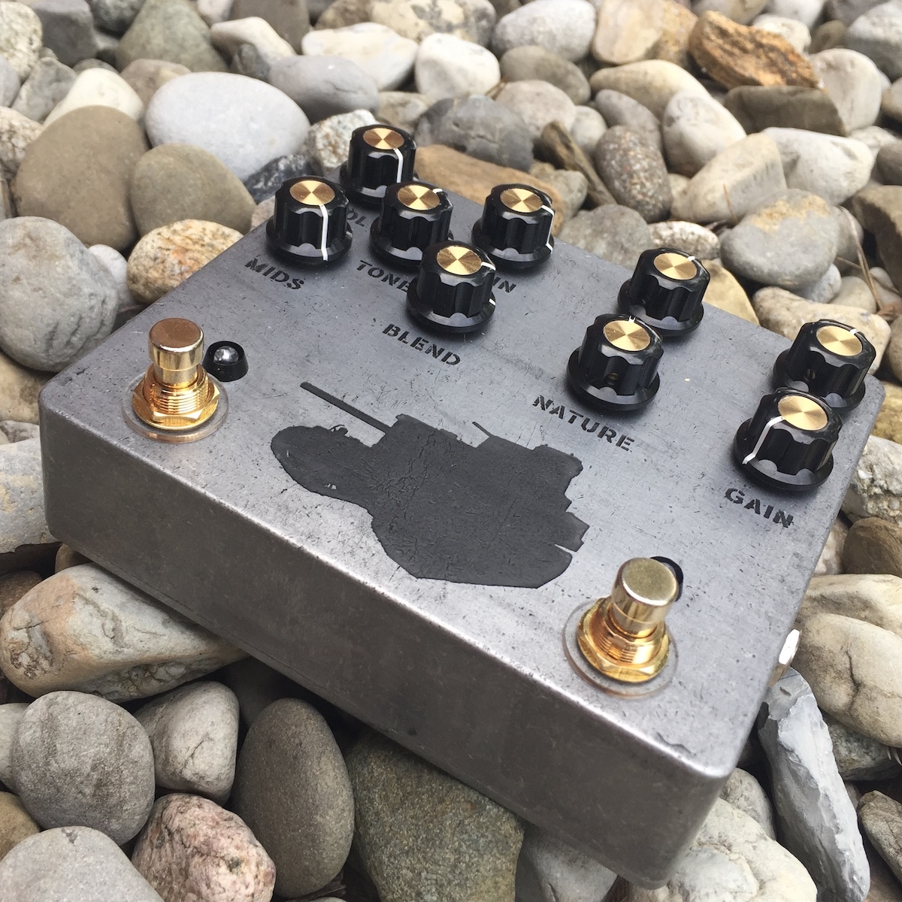
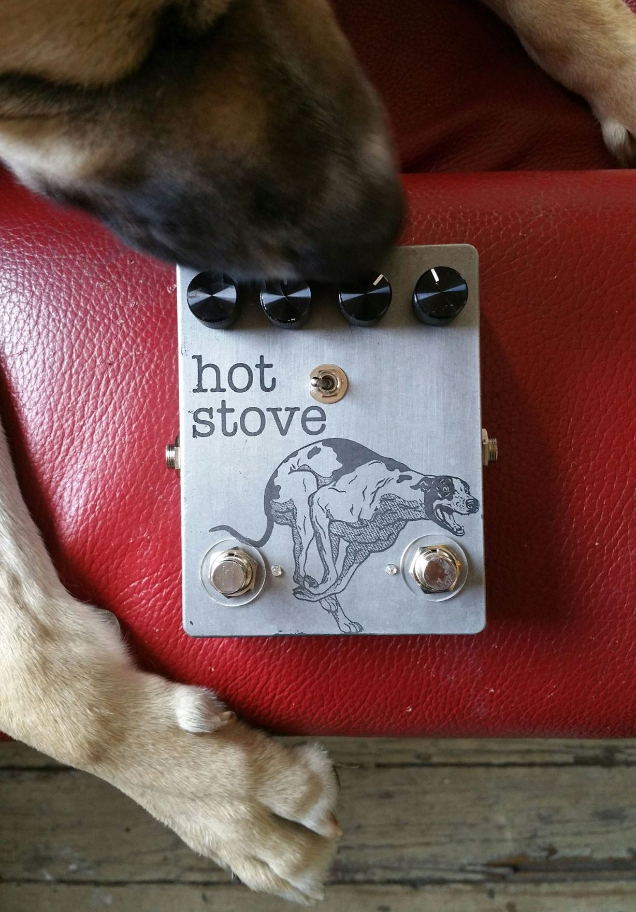
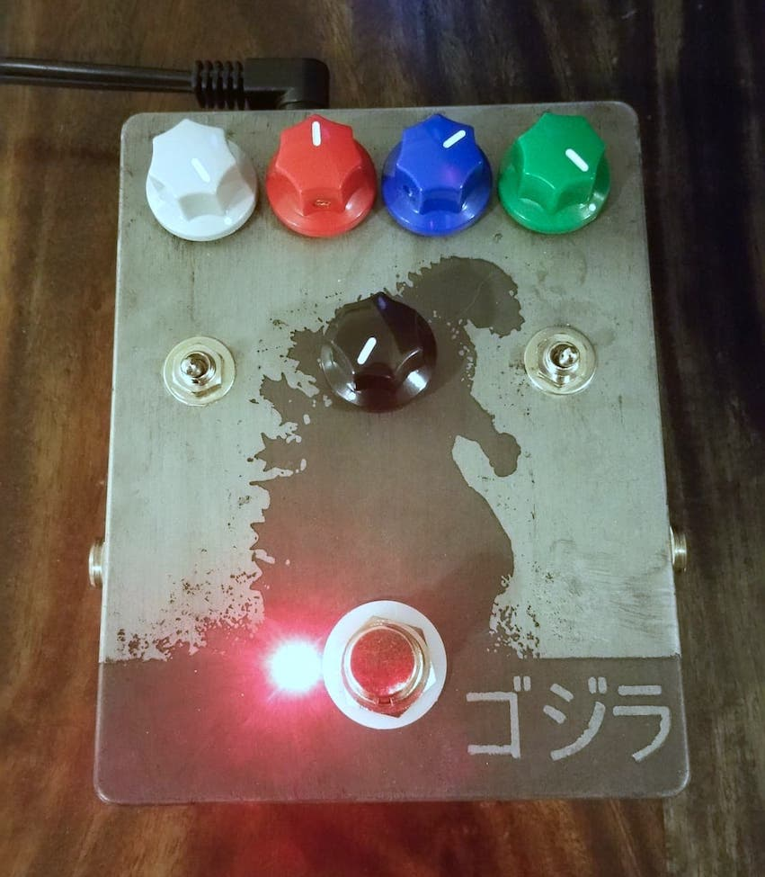
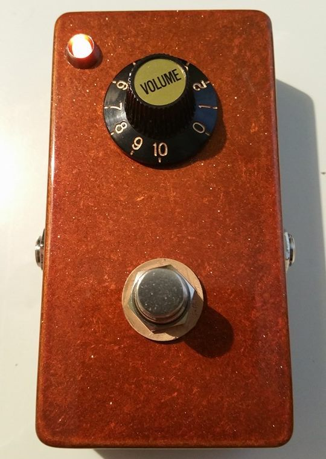
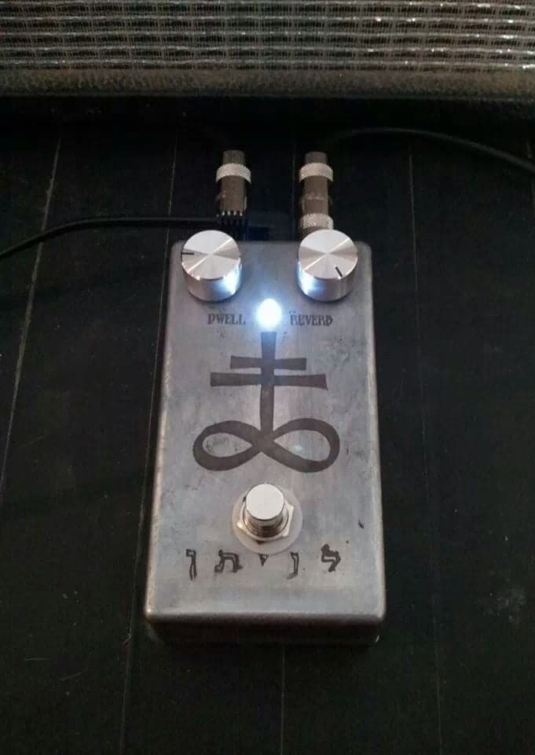

PEDALS I'VE BUILT











I'm a web developer with a knack for design. I lived in Philly my whole life until recently when my wife and I bought a house 5 minutes outside of it. When I'm not coding I build custom effects pedals under the banner of Sixty/Forty Custom Pedals and I'm the guitar player and singer in a noise-rock/post-hardcore band called FAKING.
I built this site with Haml, Sass, jQuery, and Ruby. For details on the tech behind this site check out the footer.
My wife and I live with a few animals.
Peanut is our good dog. He’s what’s called a “Deer Headed” Chihuahua. He was found wandering the streets of North Philly emaciated and with a broken leg. The leg had to be amputated but he’s still got more legs than you so he's doing fine. Also, he'll chew on the edge of your sweater for a half hour and not damage it at all.
Willie is our bad dog and the newest addition to our home. We think he's a Chihuahua/Corgi mix. He was a stray in Virginia and had his right eye removed because of an injury. He’s a real handful but Peanut loves him.
Marco was my first pet as an adult. He and two other kittens were tossed in the bottom of a 30 gallon trashcan and put out on the curb in West Philly where a friend of mine found them. He was a runt and his meows sounded like Tom Waits’ voice pitched up two octaves. He’s real grumpy and hates strangers and he’s my boy.
Harley was one of the kittens in the first litter we fostered. We got really attached to her and decided to keep her after finding homes for her mom, brother, and sister. If we knew we were gonna keep her we would have given her a better name.

more to come